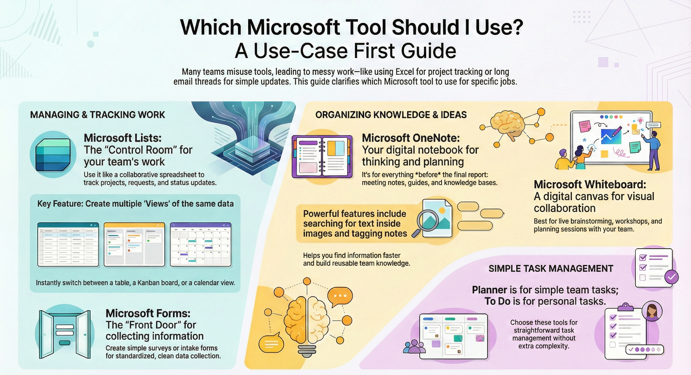
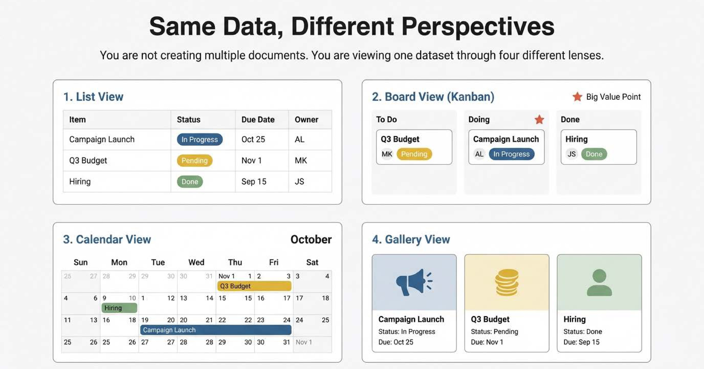
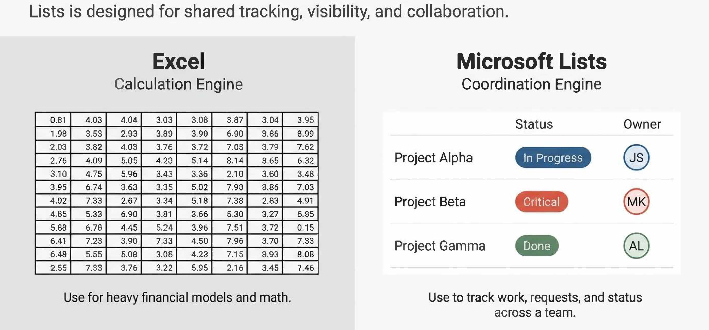
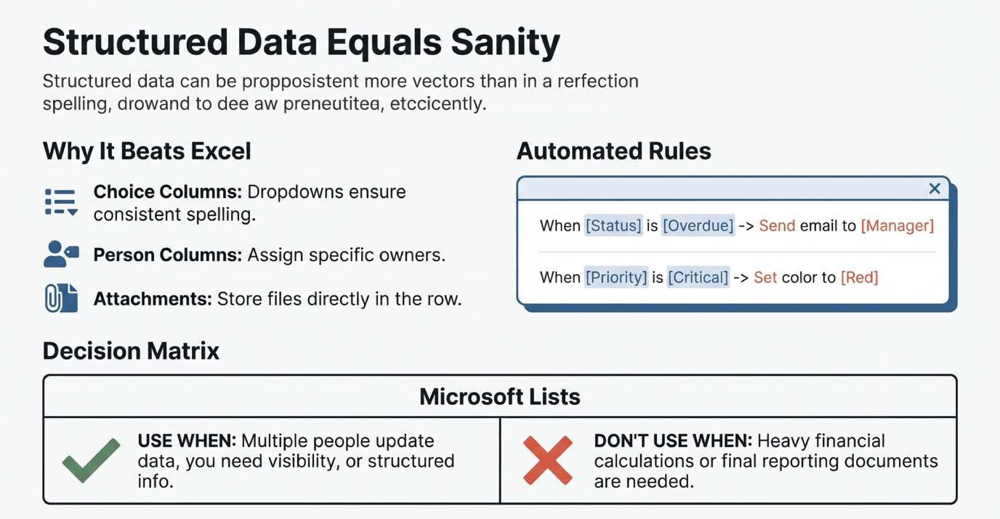
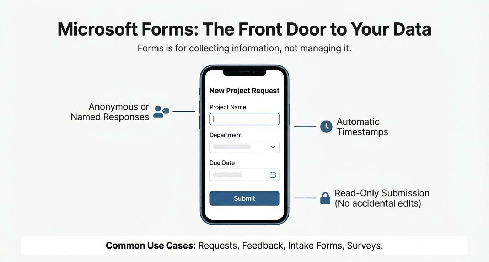
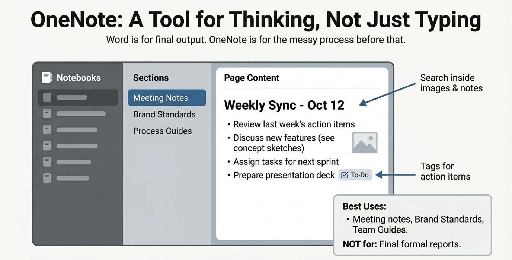
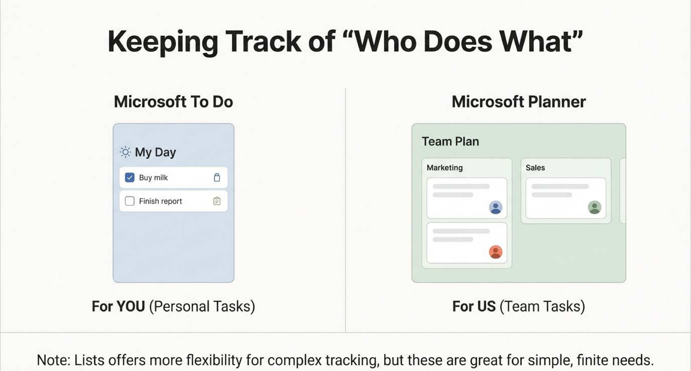

Article 1
Title
Choosing the right MS Tool
Publish Date
January 24, 2026
Choosing the Right Microsoft Tool: A Use Case First Guide
This article is not about learning every Microsoft tool. It was about understanding what problem each tool solves, so you know which one to use—and when.
Why this matters?
In many teams, work becomes messy not because people are unskilled, but because tools are misused:
• Excel files for tracking everything.
• Long email threads for simple updates.
• Scattered Word docs with no ownership.
This guide is a practical, non technical overview of commonly used Microsoft tools—shared with my team to help them work smarter, not harder.
Goal of the Article
The goal was to help the team:
• Reduce manual work
• Organize information more clearly
• Track requests and tasks with visibility
• Avoid overusing Excel, email, and random documents
Important clarifications:
• ❌ This is not deep technical training
• ✅ This is use case driven and practical
• 🧠 You don’t need to learn everything—just enough to know what’s possible
Microsoft Lists
What problem it solves
Microsoft Lists is like Excel—but built for shared tracking, visibility, and collaboration.
If Excel is great for calculations, Lists is great for tracking work, requests, and status.
You can track almost anything:
• Projects
• Requests
• Issues
• Inventories
• Status updates
Feature #1 Views
You are not creating multiple lists—you’re creating multiple views of the same data.
Available views:
• List view – table (Excel like).
• Board view – Kanban style columns.
• Calendar view – date based tracking.
• Gallery view – card based, visual layout.
Example:
• Group projects by Phase
• Or regroup the same data by Brand
• Or switch to Calendar view to see deadlines

Feature #2 Column Types
Lists prevents messey data by enforcing structure:
• Choice (dropdowns)
• Person (owners)
• Date
• Number
• Yes / No
• Attachments (files, screenshots, images, etc.)

Feature #3 Rules (Light Automation)
Without being technical, you can set rules like:
• Highlight rows when Priority = Critical
• Notify someonw when Status changes = Overdue

Feature #4 Permissions
• Control who can view vs edit
• Useful for shared tracking without losing control
Use Lists when:
• Multiple people update data
• Visibility and ownership matter
• You need structured tracking
Don't use Lists when:
• Heavy calculations are required
• You are creating final reporting documents
Microsoft Forms
What problem it solves
Microsoft Forms is for collecting information, not managing it.
Think of it this way:
• Forms = Front door (input)
• Lists = Control room (management)
Forms integrates seamlessly with Lists—submissions can automatically land in a List for tracking.

Key Clarifications
• Respondents cannot edit submitted data
• Responses can be: Anonymous or named (internal users)
• Automatic timestamps
Common use cases
• Requests
• Feedback
• Intake forms
• Surveys
• Basic approvals
User Forms when:
• You want standardized input
• You don’t want people editing data
Don't use Forms when:
• Ongoing collaboration is required
• People need to update existing entries
Microsoft OneNote (Knowledge & Thinking Tool)
What problem it solves
OneNote is not a document tool—it’s a thinking and organization tool.
• Word = final output
• OneNote = everything before that

How I personally use it
I structure my OneNote with sections like:
• Meeting Notes
• Standards
• Guides
Under each section, I create pages for specific topics or meetings. This helps me:
• Find information faster
• Build reusable knowledge
• Avoid rewriting the same things
Powerful features people overlook
• Search across all notebooks
• Search inside images & screenshots
• Tags (To Do, Important, Question)
• Version history
• Real time collaboration
• Offline access with later sync
Use OneNote for:
• Meeting notes
• Knowledge bases
• Standards
• Personal workflows
• Team reference material
Don’t use OneNote for:
• Final reports
• Structured data
• Formal approvals
Planner & To Do (Light Task Managment)
What problem it solves
These are simple task tracking tools:
• To Do → personal tasks
• Planner → lightweight team tasks
They work well for straightforward task management. For more flexibility and visibility, I personally prefer Lists—but these tools are useful when simplicity is the priority.

Microsoft Whiteboard (Collaboration Tool)
What problem it solves
Whiteboard supports real time collaboration and visual thinking..
Use cases:
• Brainstorming
• Workshops
• Retrospectives
• Planning sessions
This works best as a supporting tool, not a system of record.
Final Thoughts
You don’t need to master every tool.
The real skill is knowing:
“What problem am I trying to solve—and which tool fits best?”
That mindset alone can dramatically improve how teams work together.